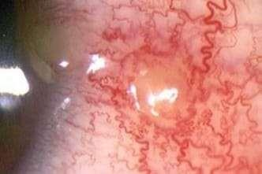

Conjunctiva · Phlyctenular kerato-conjunctivitis
Phlyctenular Kerato- Conjunctivitis
Definition
It is an acute allergic condition affecting the conjunctiva and the cornea, as a result from endogenous toxin. The characteristic lesion is the phlycten.
Endogenous toxin: as:
- Tuberculo-protein, intestinal parasites.
- Septic foci of streptococci (tonsil, adenoid), staph blepharoconjunctivitis.
Clinical picture
- Age: Mostly affects children (5-12) years.
Symptoms
- Discomfort, hyperemia, lacrimation in phlycten.
- If phlyctenular ulcer is formed, pain photophobia, blepharospasm or discharge (2nd infection) may be present.
